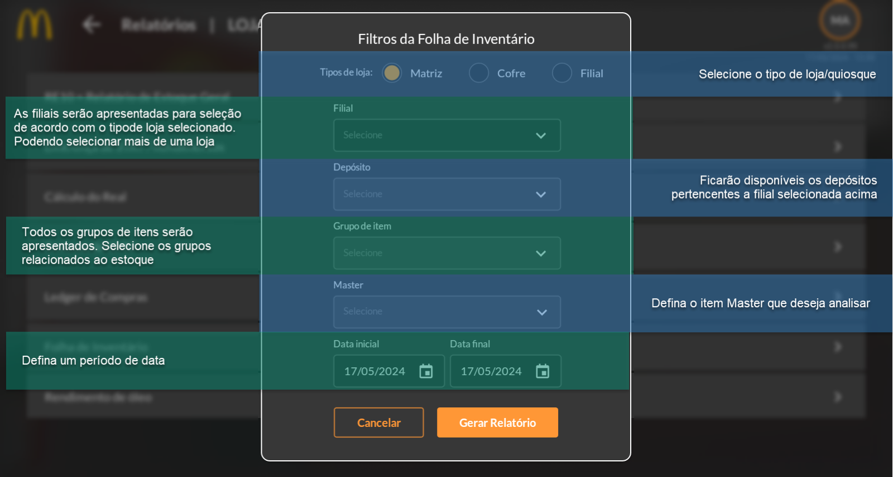
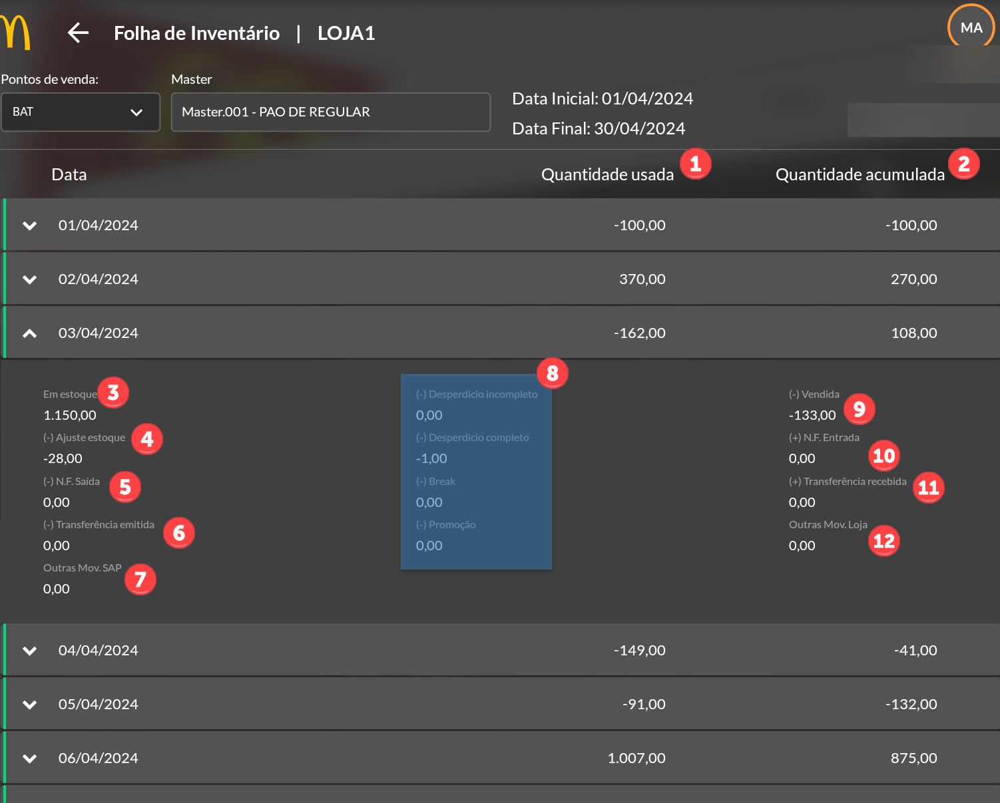
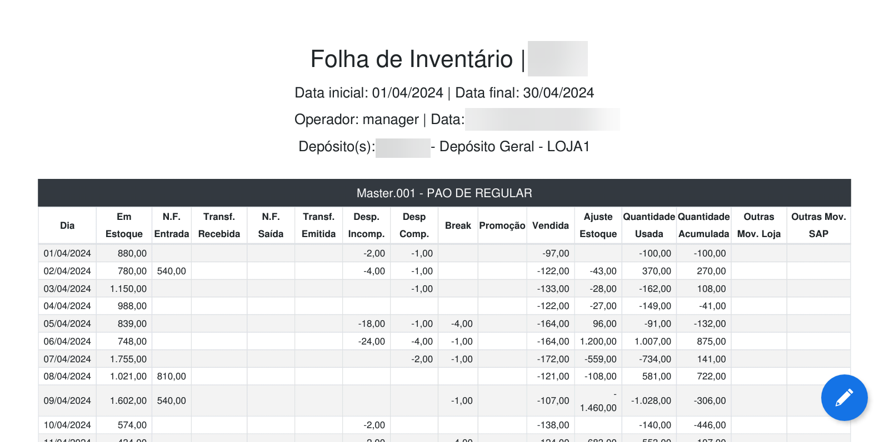

Folha de Inventário
O relatório Folha de Inventário, é utilizado como ferramenta para analisar a movimentação de estoque de um item específico, pois mostra a quantidade usada e a quantidade acumulada de um determinado master por dia e período. A imagem abaixo representa a tela de filtro para selecionar as opções desejadas a serem apresentadas no relatório.
Após gerar o relatório, será aberta uma tela contendo a data, a quantidade usada (1) e a acumulada (2), será sempre calculado a movimentação um dia antes e depois das datas informadas no filtro, para representar o saldo inicial e final da movimentação, além disso, é possível ver os detalhes da movimentação do estoque ao selecionar uma data específica, assim como mostra na imagem abaixo.
Ao clicar sobre a data, será apresentado de forma detalhada as informações referentes ao Master. Contendo as informações em estoque (3), referente a quantidade em estoque considerando a data selecionada, os ajustes de estoque (4) que estão relacionados com as contagens feita pela loja, as Notas Fiscais de Saída (5) emitidas com o item em destaque, as transferências entre lojas (6) geradas, as movimentações lançadas pelo SAP (7) em caso de possíveis ajustes, os lançamentos de motivos de saída de estoque (8), a quantidade de vendas (9), os recebimentos para o item considerando as Notas Fiscais de Entrada (10), as transferências (11) recebidas de outras lojas e outros lançamentos (12) efetuados pela loja com movimentação do item.
Ao clicar em “Imprimir PDF” será gerado um arquivo em PDF para impressão contendo as mesmas informações do aplicativo, assim como demonstra na imagem abaixo.
